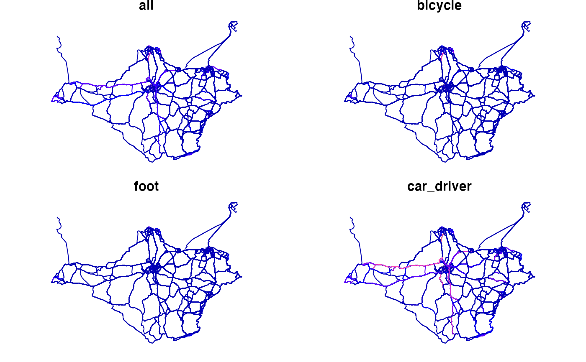

This function gets data generated for the Propensity to Cycle Tool
project and returns objects in the modern sf class.
get_pct(
base_url = "https://github.com/npct/pct-outputs-regional-notR/raw/master",
purpose = "commute",
geography = "lsoa",
region = NULL,
layer = NULL,
extension = ".geojson",
national = FALSE
)Where the data is stored.
Trip purpose (typically school or commute)
Geographic resolution of outputs, msoa or lsoa (the default)
The PCT region or local authority to download data from (e.g. west-yorkshire or Leeds).
See View(pct_regions_lookup) for a full list of possible region names.
The PCT layer of interest, z, c, l, rf, rq or rnet
for zones, centroids, desire lines, routes (fast or quiet) and route networks, respectively
The type of file to download (only .geojson supported at present)
Download nationwide data? FALSE by default
# \donttest{
rf = get_pct(region = "isle-of-wight", layer = "rf")
names(rf)[1:20]
#> [1] "id" "geo_code1" "geo_code2" "geo_name1"
#> [5] "geo_name2" "lad11cd1" "lad11cd2" "lad_name1"
#> [9] "lad_name2" "all" "bicycle" "foot"
#> [13] "car_driver" "car_passenger" "motorbike" "train_tube"
#> [17] "bus" "taxi_other" "govtarget_slc" "govtarget_sic"
vars_to_plot = 10:13
plot(rf[vars_to_plot])

z = get_pct(region = "isle-of-wight", layer = "z")
rf = get_pct(region = "west-yorkshire", layer = "rf")
z_all = get_pct(layer = "z", national = TRUE)
#> Warning: GDAL Message 1: +init=epsg:XXXX syntax is deprecated. It might return a CRS with a non-EPSG compliant axis order.
# }